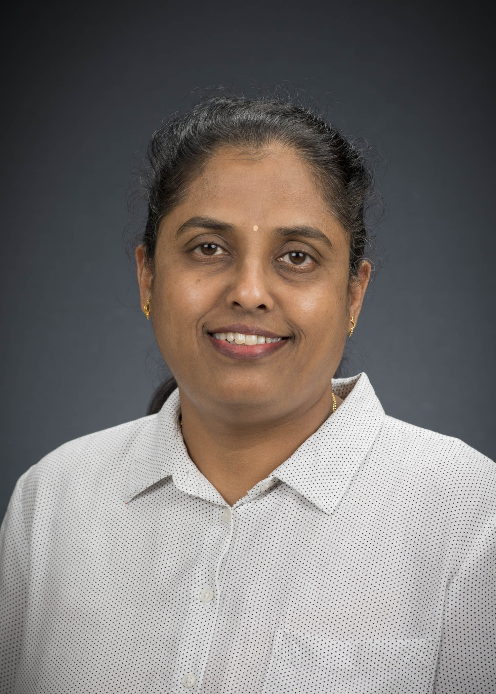

Georgia Southern University
Assistant Professor (Tenure Track) · Department of Computer Science
AEP College of Engineering and Computing
I am a computer scientist with research spanning AI in Education, Data Science & Graph Analytics, Computational Neuroscience, ML/NLP in Software Engineering, Privacy & Policy Analytics, and Cybersecurity Analytics. My work bridges computational methods with real-world applications in learning engagement, brain network analysis, privacy policy transparency, and digital forensics.

Research Focus
Scalable algorithms for large graphs, Bayesian networks, and social/collaboration network analysis.
Eye-tracking analytics for student attention, AI-enabled Learning Assistance for engagement in computing education.
User stories & requirements analysis, software text understanding using machine learning and NLP techniques.
EEG-based functional brain networks, connectivity analysis during cognition using graph-theoretic methods.
Transparency and compliance modeling using NLP and graph mining in search warrant and privacy policy analysis.
Knowledge graphs for threat investigation and pattern mining; linkage to digital forensics text and code artifacts.
AI/ML to model environmental and dietary impacts on cognitive processes and health outcomes.
Latest